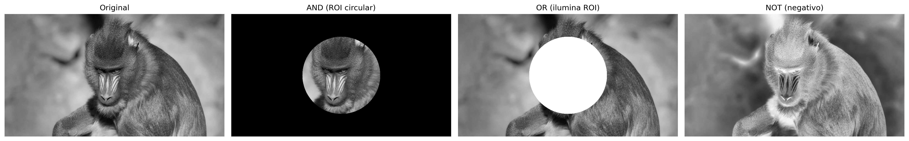
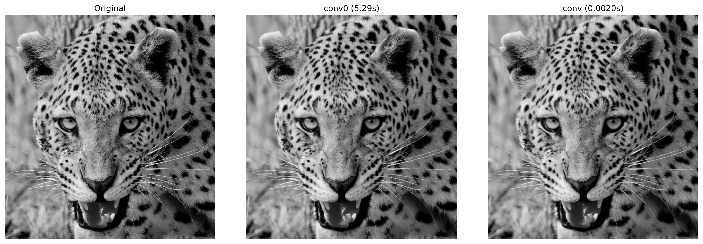
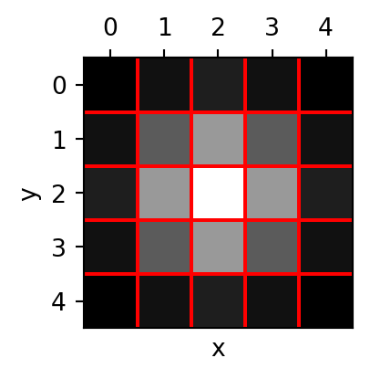
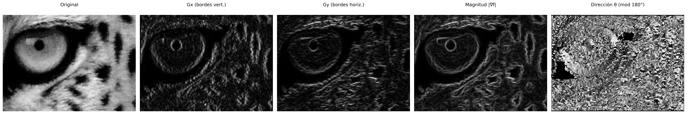
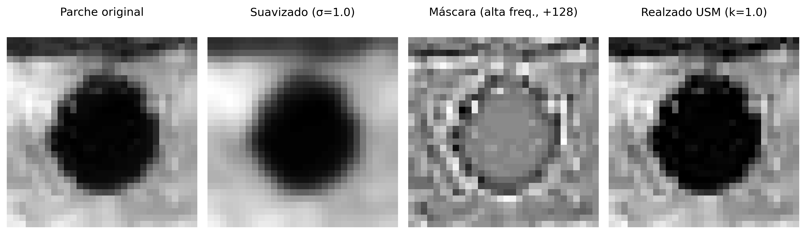
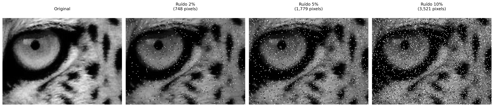

3Operaciones Espaciales: Intensidad, Histograma y Filtrado
Este capítulo profundiza en el procesamiento de imágenes en el dominio espacial, partiendo de la manipulación directa de píxeles e histogramas para el realce de contraste, hasta la aplicación de filtros locales por convolución para suavizado, reducción de ruido y detección de bordes. El objetivo es desarrollar la intuición matemática y computacional que sustenta gran parte de los algoritmos modernos de Visión Computacional.
3.1 Objetivos
Al final de este capítulo, usted será capaz de:
Manipular intensidad y píxeles: Ejecutar operaciones aritméticas saturadas (mm.addm, mm.subm) y lógicas bit a bit (mm.band, mm.bor, mm.bnot) para combinación y selección de regiones de interés (ROI), y aplicar alpha blending (mm.blend) para fusión ponderada de imágenes;
Procesar histogramas: Interpretar el histograma como diagnóstico tonal y aplicar ecualización global mediante CDF (mm.equalize); en la ruta Python, también la ecualización adaptativa (CLAHE) y la especificación de histograma para transferencia de perfil tonal entre imágenes;
Comprender fundamentos espaciales: Entender vecindad, padding de borde (mm.pad) y la diferencia entre correlación cruzada (mm.conv) y convolución — incluyendo por qué kernels asimétricos como el de Sobel producen resultados distintos en las dos operaciones;
Aplicar filtrado de suavizado: Usar el filtro de media (mm.blur, o mm.conv con kernel uniforme) y el filtro Gaussiano (mm.gaussian) para reducción de ruido, comprendiendo la ventaja de la ponderación radial y de la separabilidad Gaussiana;
Aplicar filtrado de realce: Usar el Laplaciano \(w_4\) y \(w_8\) (mm.laplacian) para realce isotrópico de bordes, el operador de Sobel (mm.sobel) para la magnitud del gradiente — y, en la ruta Python, la descomposición direccional \(G_x\), \(G_y\) y ángulo —, y el Unsharp Masking (mm.usm) para amplificación de alta frecuencia controlada por el parámetro \(k\);
Utilizar filtros de orden: Aplicar el filtro de la mediana (mm.median) para eliminación de ruido sal y pimienta, comprendiendo por qué su naturaleza no lineal y la robustez a outliers lo hacen superior a los filtros lineales en ese escenario;
Resolver problemas prácticos: Encadenar técnicas en pipelines de preprocesamiento (ecualización → Gaussiano → Canny; con CLAHE en lugar de la ecualización en la ruta Python) y usar las funciones de morph (mm.conv, mm.histImg, mm.equalize, mm.drawImgKernel) para análisis y visualización didáctica de cada etapa.
3.2 Operaciones a Nivel de Intensidad
El nivel más elemental de procesamiento de imágenes actúa directamente sobre los valores de los píxeles, sin considerar la vecindad. Estas operaciones —llamadas transformaciones de punto (point operations)— son las más rápidas computacionalmente y forman la base para técnicas más complejas.
Formalmente, una transformación de punto puede describirse como:
\[
g(x,y) = T[f(x,y)]
\tag{3.1}\]
donde \(f(x,y)\) es la imagen de entrada, \(g(x,y)\) es la salida y \(T\) es una función aplicada a cada píxel individualmente.
3.2.1 Preparando el Entorno Práctico
El siguiente bloque carga la biblioteca morph del repositorio (el módulo morph.py y, en la ruta C++, también el morph.hpp utilizado en el #include de las celdas compiladas).
Como objeto de estudio a lo largo de este capítulo, utilizaremos las imágenes de vida silvestre presentadas en las Figura 3.1 y Figura 3.3.. A partir de ellas, exploraremos operaciones espaciales sobre intensidad, histogramas y filtrado, analizando sus efectos en el realce, la suavización, la reducción de ruido y la detección de bordes, con el fin de comprender los fundamentos matemáticos y computacionales del PDI.
Figura 3.1: Mandrill (Mandrillus sphinx) fotografiado en ambiente natural en Sudáfrica. Crédito: Carlos Guilherme Rodrigues (CC BY-SA 3.0).
3.2.2 Operaciones Aritméticas
Las operaciones aritméticas entre imágenes se utilizan ampliamente en PDI para combinar, comparar o realzar información. La resta de imágenes es especialmente poderosa para detectar diferencias entre dos cuadros — por ejemplo, en la eliminación del fondo estático en cámaras de vigilancia:
\[
g(x,y) = f_1(x,y) - f_2(x,y)
\tag{3.2}\]
La suma saturada limita el resultado al intervalo \([0, 255]\): los valores superiores a 255 se fijan en 255, evitando el overflow silencioso del tipo uint8 (p. ej., \(200 + 100 = 44\) en lugar de 300). La resta saturada aplica el mismo principio por el lado inferior: los valores negativos se fijan en 0.
AdvertenciaSaturación y overflow
Las operaciones aritméticas en uint8 sufren overflow silencioso: \(200 + 100 = 44\) (no 300). mm.addm y mm.subm realizan la saturación automática, fijando el resultado en \([0, 255]\). El blending utiliza pesos fraccionarios: mm.blend opera internamente en punto flotante y solo entonces redondea y satura a uint8.
La Figura 3.2 demuestra la suma de una constante (aclarado) y la resta de una constante (oscurecimiento con saturación en 0).
Cuando \(\alpha = 1\), se obtiene únicamente la imagen \(f_1\); cuando \(\alpha = 0\), solo \(f_2\). Los valores intermedios producen una transición suave entre ambas, siendo ampliamente utilizados en composición de imágenes, superposición de capas, marcas de agua y efectos de fusión visual.
Para que la combinación produzca un resultado coherente, es necesario alinear previamente las regiones de interés. En la Figura 3.4, se recorta el rostro del leopardo con mm.crop(img_leop_gray, 250, H-300, 100, W-200) y la región facial del mandril con mm.crop(img_gray, 100, 400, 380, 530), de modo que los ojos y la estructura facial queden aproximadamente alineados. El recorte del leopardo se redimensiona entonces (mm.resize) a las dimensiones del mandril antes de la mezcla.
mm.blend realiza la operación en punto flotante — evitando overflow en los cálculos con pesos fraccionarios — y solo entonces redondea y satura el resultado a uint8.
Figura 3.4: Mezcla alfa entre recortes alineados de mandril y del leopardo (Figura 3.3) para diferentes valores de α. En α=1 se ve solo el mandril; en α=0, solo el leopardo; valores intermedios fusionan las miradas de las dos imágenes proporcionalmente.
3.2.4 Operaciones Lógicas y Máscaras Bit a Bit
Las operaciones lógicas bit a bit (AND, OR y NOT) actúan directamente sobre los bits de cada píxel y son la base para la creación y aplicación de máscaras (masks) —imágenes binarias con solo 0 (negro) y 255 (blanco) utilizadas para aislar Regiones de Interés (ROI).
El comportamiento de cada operación se deriva de la representación binaria del 255 (11111111) y del 0 (00000000):
AND con la máscara: donde \(m = 255\), los bits originales se preservan; donde \(m = 0\), el píxel se pone a cero. Resultado: recorte de la ROI. \[g(x,y) = f(x,y) \;\text{AND}\; m(x,y)
\tag{3.4}\]
OR con la máscara: donde \(m = 255\), el píxel se fuerza a blanco; donde \(m = 0\), se mantiene el valor original. Resultado: iluminación de la ROI.
NOT (sin máscara): invierte todos los bits (\(g = 255 - f\)), produciendo el negativo fotográfico de la imagen.
La Figura 3.5 ilustra las tres operaciones aplicadas a la imagen del mandril con una máscara circular.
h, w = img_gray.shape# Máscara circular rellena, centrada en la imagen (mm.circle dibuja el# disco; la versión didáctica, prueba de radio píxel a píxel, es mm.circle0).mask_circ = mm.circle(np.zeros((h, w), dtype=np.uint8), (w //2, h //2), min(h, w) //3-10, 255, -1)# Operaciones vía morphimg_not = mm.bnot(img_gray) # NOT: negativo fotográficoimg_and = mm.band(img_gray, mask_circ) # preserva solo la ROI circularimg_or = mm.bor(img_gray, mask_circ) # ilumina la región de la máscaramm.show( [img_gray, img_and, img_or, img_not], titles=["Original", "AND (ROI circular)", "OR (ilumina ROI)", "NOT (negativo)"], cols=4)

Figura 3.5: Operaciones lógicas bit a bit con máscara circular: AND (aislamiento de la ROI), OR (iluminación de la ROI) y NOT (negativo).
3.3 Histograma de Imágenes
El histograma de una imagen en tonos de gris es una función discreta que describe la distribución de frecuencias de las intensidades:
donde \(r_k\) es el \(k\)-ésimo nivel de intensidad, \(n_k\) es el número de píxeles con esa intensidad y \(L\) es el total de niveles (típicamente 256 para 8 bits). El histograma normalizado estima la probabilidad de cada nivel:
\[
p(r_k) = \frac{n_k}{MN}
\tag{3.6}\]
donde \(MN\) es el total de píxeles. Por ser una estadística global, el histograma no contiene información posicional, pero revela características esenciales como brillo medio, contraste y distribución tonal. En la práctica, mm.hist(img) devuelve el vector de conteos \(h(r_k)\), que sirve tanto para visualización (mediante mm.histImg) como para cálculos como función de distribución acumulada (CDF) y ecualización.
NotaInterpretación del Histograma
Estrecho a la izquierda: imagen subexpuesta (oscura).
Estrecho a la derecha: imagen sobreexpuesta (clara).
Concentrado en el centro: bajo contraste.
Distribuido por todo el rango: alto contraste, buena utilización de los tonos disponibles.
La Figura 3.6 presenta el histograma de la imagen del mandril, así como versiones oscurecida (mm.subm) y aclarada (mm.addm). Se observa el desplazamiento de la distribución de intensidades hacia la izquierda y hacia la derecha, respectivamente. Nótese que el intervalo representado en el eje \(x\) no corresponde necesariamente a todo el rango de 0 a 255.
Figura 3.6: Histogramas de la imagen original, de una versión oscurecida (−80) y de una aclarada (+80). La resta/suma satura en 0 y 255.
3.3.1 Ecualización de Histograma
La ecualización de histograma redistribuye las intensidades para que el histograma resultante sea lo más uniforme posible. El mapeo está dado por la función de distribución acumulada (CDF):
La transformación es monótona: los niveles frecuentes reciben intervalos mayores en el dominio de salida (mayor separación → más contraste), mientras que los niveles raros se comprimen.
El algoritmo completo, en cinco etapas, se presenta en la Tabla 3.1.
Tabla 3.1: Algoritmo de ecualización de histograma.
Etapa
Operación
Fórmula
1
Histograma
\(h[k] \leftarrow\) número de píxeles con intensidad \(k\), \(k=0\ldots L-1\)
\(g[i,j] \leftarrow \text{lut}[f[i,j]]\) (para todo píxel)
Observe en la Figura 3.7 que la ecualización redistribuye los tonos existentes a posiciones más espaciadas en el rango \([0, L-1]\), pero no crea tonos nuevos — la imagen ecualizada continúa con exactamente 3 tonos distintos, ahora en \(\{1, 5, 7\}\) en lugar de \(\{2, 3, 4\}\).
img5 = np.array([[3, 4, 2, 3, 4], [4, 3, 3, 4, 3], [2, 3, 4, 3, 2], [3, 4, 3, 2, 3], [4, 3, 2, 3, 4]], dtype=np.uint8)L =8# 3 bits: niveles 0..7# 1. Histograma con tamaño garantizado hasta Lh = mm.hist(img5, 3) # B=3 → 2³=8 niveles, tamaño garantizadop = h / h.sum() # 2. Probabilidad de cada nivel p[k] = h[k] / MNcdf = np.cumsum(p) # 3. CDF normalizada o# cdf = np.zeros(len(p))# cdf[0] = p[0]# for k in range(1, len(p)):# cdf[k] = cdf[k-1] + p[k] # cdf[k] = Σ p[j], j=0..klut = np.round(cdf * (L -1)).astype(np.uint8) # 4. LUT: mapeo para [0, L-1]img5_eq = lut[img5] # 5. Aplica LUT pixel a pixel o, equivalente a:# l, c = img5.shape# img5_eq = np.zeros((l, c), dtype=np.uint8)# for i in range(l):# for j in range(c):# img5_eq[i, j] = lut[img5[i, j]] # g[i,j] = lut[f[i,j]]print("Imagen original (5×5, 3 bits):")print(img5)print()header =f"{'k':>3}{'h[k]':>6}{'p[k]':>7}{'CDF[k]':>8}{'lut[k]':>7}"print(header)print("-"*len(header))for k inrange(L):print(f"{k:>3}{h[k]:>6}{p[k]:>7.4f}{cdf[k]:>8.4f}{lut[k]:>7}")print()print("Imagen ecualizada (5×5):")print(img5_eq)# Cuenta tonos distintostons_orig =len(np.unique(img5))tons_eq =len(np.unique(img5_eq))mm.show( [img5, img5_eq, mm.histImg(img5, L-1), mm.histImg(img5_eq, L-1)], titles=[f"Original ({tons_orig} tonos: {sorted(np.unique(img5).tolist())})",f"Ecualizada ({tons_eq} tonos: {sorted(np.unique(img5_eq).tolist())})","Histograma — Original","Histograma — Ecualizada"], rows=2, cols=2, figsize=(5, 4), dpi=100)
Figura 3.7: Ecualización de histograma en imagen 5×5 con 3 bits (L=8): imagen original con tonos concentrados en {2,3,4}, imagen ecualizada con tonos redistribuidos para {1,5,7}, y los respectivos histogramas evidenciando la dispersión de las frecuencias.
Limitación: la ecualización global puede realzar en exceso los ruidos y producir contraste excesivo en regiones homogéneas. El CLAHE (Contrast Limited Adaptive Histogram Equalization) reduce este problema al aplicar la ecualización en bloques locales (tiles) y limitar la altura de los picos del histograma antes de la ecualización.
La Figura 3.8 compara la imagen original, la ecualización global mediante mm.equalize y el CLAHE de OpenCV, mostrando también los histogramas resultantes. A diferencia de la ecualización global, que utiliza una única transformación basada en la CDF de toda la imagen, el CLAHE adapta el contraste a cada región, siendo particularmente útil en imágenes con iluminación no uniforme.
En el ejemplo, se utilizó clipLimit=2.0 y tileGridSize=(32,32). El parámetro clipLimit define cuánto pueden crecer los picos del histograma local antes de ser recortados (clipped). En OpenCV, este valor es un factor relativo: el límite real se calcula aproximadamente como clipLimit × (número de píxeles del bloque / número de niveles de gris). Por ejemplo, en un bloque con 4096 píxeles y una imagen de 8 bits (256 niveles de gris), la frecuencia media por nivel es \(4096/256=16\). Así, clipLimit=2.0 permite picos de aproximadamente \(2\times16=32\) ocurrencias antes del recorte. Las ocurrencias excedentes no se descartan: se redistribuyen entre los demás niveles de gris del histograma, reduciendo la concentración excesiva en pocos niveles y evitando una amplificación exagerada del contraste local. Valores menores limitan más el contraste y reducen la amplificación del ruido, mientras que valores mayores permiten un realce más intenso, pero pueden introducir artefactos.
clipLimit=1.0: realce suave y conservador;
clipLimit=2.0: buen equilibrio entre contraste y naturalidad;
clipLimit=4.0: mayor énfasis en los detalles locales;
clipLimit=8.0: contraste agresivo, con posible amplificación del ruido.
Así, el CLAHE suele producir resultados más naturales que la ecualización global, especialmente en imágenes con sombras, reflejos o iluminación desigual.
img_eq = mm.equalize(img_gray)clahe = cv2.createCLAHE(clipLimit=2.0, tileGridSize=(32, 32))img_clahe = clahe.apply(img_gray)images = [img_gray, img_eq, img_clahe]titles = ["Original", "mm.equalize (CDF)", "CLAHE"]mm.show( images + [mm.histImg(img) for img in images], titles=titles + [f"Histograma — {t}"for t in titles], rows=2, cols=3, figsize=(14, 8))
Figura 3.8: Ecualización de histograma: mm.equalize (global vía CDF) vs. CLAHE (adaptativa con limitación de contraste). Los histogramas revelan la dispersión progresiva de las intensidades.
3.3.2 Especificación de Histograma
Mientras que la ecualización impone una distribución uniforme, la especificación de histograma (histogram matching) permite que el histograma de la imagen de salida siga una distribución arbitraria — por ejemplo, el histograma de otra imagen de referencia.
El procedimiento involucra tres etapas:
Calcular la CDF de la imagen de entrada: \(P_r(r_k)\).
Calcular la CDF de la imagen de referencia: \(P_z(z_k)\).
Para cada nivel \(r_k\), encontrar el nivel \(z\) que minimiza \(|P_z(z) - P_r(r_k)|\).
En la Figura 3.9, transferimos el perfil tonal del leopardo (Figura 3.3) a la imagen del mandril — una aplicación directa del concepto visto en el blending: en lugar de fusionar píxeles, aquí fusionamos distribuciones tonales.
Figura 3.9: Especificación de histograma: mandril mapeada al perfil tonal del leopardo. La CDF de salida aproxima la CDF de referencia.
3.4 Fundamentos Espaciales: Vecindad, Convolución y Kernels
Las operaciones de filtrado espacial no actúan sobre un píxel aislado, sino sobre una vecindad que lo rodea. Para ello, se utiliza una pequeña matriz de coeficientes denominada kernel (o máscara), que recorre toda la imagen mediante una ventana deslizante (sliding window).
Las ventanas más comunes son de 3×3, 5×5 y 7×7. En una ventana de 3×3, por ejemplo, el píxel central se procesa junto con sus ocho vecinos inmediatos. En cada posición de la ventana, los valores de los píxeles se combinan con los coeficientes del kernel, produciendo un nuevo valor para el píxel central.
3.4.1 Vecindad
Considere una ventana de 3×3 centrada en el píxel \((x,y)\):
De forma general, una ventana de tamaño \((2a+1)\times(2b+1)\) abarca todos los píxeles situados hasta \(a\) posiciones en horizontal y hasta \(b\) posiciones en vertical con respecto al píxel central. Así, una ventana de 3×3 corresponde a \(a=b=1\), una ventana de 5×5 a \(a=b=2\), y así sucesivamente.
Los píxeles cercanos a los bordes tienen parte de su vecindad fuera de la imagen. Para aplicar filtros en estas regiones, es necesario definir cómo se obtendrán los valores externos. Las tres estrategias más comunes (con la constante equivalente de OpenCV entre paréntesis) son:
Zero-padding (BORDER_CONSTANT): completa la región externa con ceros.
Replicación (BORDER_REPLICATE): repite el valor del píxel del borde.
Reflexión (BORDER_REFLECT_101): refleja los píxeles vecinos, sin repetir el del borde.
mm.conv usa la reflexión por defecto, ya que preserva mejor la continuidad de los niveles de gris y reduce artefactos en el tratamiento de los bordes.
El siguiente ejemplo compara las tres estrategias con mm.pad en una matriz 3×3. Observa cómo cada una rellena los píxeles externos necesarios para aplicar un filtro 3×3 también en las esquinas.
img = np.array([ [1, 2, 3], [4, 5, 6], [7, 8, 9]], dtype=np.uint8)bordas = ["constant", "replicate", "reflect101"]print("Imagen original:")print(mm.drawImg(img))for k in [3, 5]: b = k //2print(f"=== Kernel {k}x{k} (padding b={b}) ===")for nome in bordas:print(nome)print(mm.drawImg(mm.pad(img, b, border=nome)))
Observa que el resultado de un filtro puede variar significativamente según el tratamiento adoptado para los bordes de la imagen.
En la biblioteca didáctica morph.py, los algoritmos implementados directamente en Python (sin OpenCV ni scikit-image) — las variantes de sufijo 0, como mm.conv0 — no usan padding. Para cada píxel, los elementos de la vecindad se examinan individualmente, y solo los vecinos cuyas coordenadas pertenecen al dominio de la imagen participan en el cálculo. Así, en las regiones próximas a los bordes, la vecindad efectiva puede contener menos píxeles que la ventana especificada; en los operadores basados en mm._viz (por ejemplo, mm.laplacian), los píxeles de borde con ventana incompleta se dejan inalterados.
3.4.3 Correlación vs. Convolución
Existen dos mecanismos matemáticamente relacionados.
Correlación cruzada (cross-correlation) — el kernel se aplica directamente:
Para kernels simétricos (Gaussiano, Laplaciano, media) las dos operaciones producen resultados idénticos. Para kernels asimétricos (Sobel, Prewitt) la diferencia es significativa, como lo muestran los ejemplos a continuación.
3.4.3.1 Correlación (mm.conv)
# imagen 4x4 (uint8) y kernel asimétrico 3x3img = np.array([[ 1, 2, 3, 4], [ 5, 6, 7, 8], [ 9, 10, 11, 12], [13, 14, 15, 16]], dtype=np.uint8)w = np.array([[0, 1, 2], [0, 0, 0], [0, 0, 0]], dtype=np.float32)corr = mm.conv(img, w, border="constant") # cero fuera de la imagenprint("Imagen original:");print(mm.drawImg(img))print("Kernel:");print(mm.drawImg(w))print("Resultado de la correlación:");print(mm.drawImg(corr))
La convolución utiliza el kernel rotado 180°. Para reproducir la definición matemática de convolución, se rota el kernel (aquí, [[0,1,2],[0,0,0],[0,0,0]] → [[0,0,0],[0,0,0],[2,1,0]]) antes de aplicar mm.conv.
3.4.4 El Papel del Kernel
Los coeficientes del kernel determinan completamente el efecto producido por el filtro, tal como se resume en la Tabla 3.2.
Tabla 3.2: Interpretación típica de los coeficientes del kernel.
Característica
Efecto típico
Coeficientes positivos con suma 1
Suavizado (pasa-baja)
Suma igual a 0, con valores positivos y negativos
Detección de bordes (pasa-alta)
Coeficiente central positivo dominante y vecinos negativos
La Figura 3.10 demuestra el mecanismo paso a paso: para cada posición de la ventana, se multiplica cada coeficiente del kernel por el píxel correspondiente de la vecindad y se suman los productos obtenidos. El resultado es exactamente el valor definido por la Ecuación 3.11 para esa posición de la imagen. Aunque las imágenes producidas por mm.conv0 y cv2.filter2D (o mm.conv) sean visualmente muy similares, la implementación basada en OpenCV es miles de veces más rápida, como se muestra a continuación.
AdvertenciaRendimiento: bucles de Python vs. operaciones vectorizadas
La función mm.conv0 implementa la correlación directamente en Python mediante bucles anidados. Aunque este enfoque es adecuado para fines didácticos, ejecuta un gran número de operaciones y se vuelve lento para imágenes más grandes.
En cambio, mm.conv utiliza cv2.filter2D, implementado en C++ y optimizado para operaciones matriciales. En el ejemplo presentado, la versión vectorizada fue más de 3000 veces más rápida que la implementación didáctica, produciendo un resultado visualmente equivalente.
Las diferencias numéricas observadas se concentran principalmente en los bordes de la imagen. En mm.conv0, los píxeles del borde permanecen inalterados, mientras que mm.conv utiliza una estrategia de reflexión de bordes (cv2.BORDER_REFLECT_101, estándar de cv2.filter2D).
Por ello, mm.conv0 debe utilizarse para comprender el algoritmo, mientras que mm.conv es la opción recomendada para aplicaciones prácticas.
import timew_mean = np.ones((3,3), dtype=np.float32) /9.0img_gray = img_leop_gray# Demostración numérica en parche 5×5patch = img_gray[250:255, 250:255].astype(np.float32)roi = patch[0:3, 0:3]print("Parche 5×5 (intensidades):")print(patch.astype(np.int32))print(f"\nKernel 3×3 de media:\n{w_mean}")print(f"\nCorrelación en el píxel central [1,1]: \{(w_mean * roi).sum():.1f} (original: {patch[1,1]:.0f})")# Comparación de tiempo en la imagen completat0 = time.perf_counter()img_conv0 = mm.conv0(img_gray, w_mean)t_conv0 = time.perf_counter() - t0t0 = time.perf_counter()img_conv = mm.conv(img_gray, w_mean)t_conv = time.perf_counter() - t0diff = np.abs(img_conv0.astype(int) - img_conv.astype(int)).max()print(f"\nTiempos en la imagen {img_gray.shape[0]}x{img_gray.shape[1]}:")print(f" mm.conv0 (lazos Python): {t_conv0:.3f} s")print(f" mm.conv (cv2.filter2D): {t_conv:.5f} s")print(f" Aceleración: {t_conv0/t_conv:.0f}× más rápido")print(f" Diferencia máxima: {diff} (bordes con padding diferente)")mm.show( [img_gray, img_conv0, img_conv], titles=["Original", f"conv0 ({t_conv0:.2f}s)", f"conv ({t_conv:.4f}s)"], cols=3)
Parche 5×5 (intensidades):
[[ 91 95 108 116 114]
[106 107 108 111 114]
[102 103 107 112 116]
[ 83 90 111 125 123]
[ 79 88 110 126 124]]
Kernel 3×3 de media:
[[0.11111111 0.11111111 0.11111111]
[0.11111111 0.11111111 0.11111111]
[0.11111111 0.11111111 0.11111111]]
Correlación en el píxel central [1,1]: 103.0 (original: 107)
Tiempos en la imagen 1324x1242:
mm.conv0 (lazos Python): 5.289 s
mm.conv (cv2.filter2D): 0.00196 s
Aceleración: 2695× más rápido
Diferencia máxima: 39 (bordes con padding diferente)

Figura 3.10: Correlación con kernel de media 3×3: versión didáctica (mm.conv0) vs. vectorizada (mm.conv vía cv2.filter2D). La diferencia máxima de 39 ocurre en los bordes.
3.4.5 Ejemplo Numérico: Correlación Paso a Paso
Para hacer concreto el mecanismo de la Ecuación 3.11, considere el kernel de media 3×3 (\(a=b=1\), todos los coeficientes \(= 1/9 \approx 0{,}111\)) aplicado al patch 5×5 extraído de la imagen del leopardo. La Figura 3.11 muestra el patch con la cuadrícula y resalta en amarillo la ventana 3×3 centrada en el píxel \([1,1]\):
Figura 3.11: Patch 5×5 extraído de la imagen del leopardo (posición [250:255, 250:255]). La ventana amarilla resalta la vecindad 3×3 centrada en el píxel [1,1] donde se calculará la correlación.
Para ilustrar el cálculo de la correlación, considere el píxel en la posición \([1,1]\) del patch 5×5 mostrado en la Figura 3.11.. Esa posición fue elegida solo por conveniencia didáctica, ya que posee una vecindad 3×3 completa a su alrededor.
Los valores de esa vecindad corresponden a la submatriz superior izquierda del patch:
El resultado (103) es ligeramente menor que el valor original del píxel central (107), pues la media incorpora vecinos de menor intensidad, produciendo el efecto de suavizado. En la práctica, el algoritmo inicia el procesamiento en \([0,0]\) y repite ese mismo cálculo para cada posición de la imagen, desplazando la ventana hasta cubrir todo el dominio.
3.5 Filtrado Espacial de Suavizado
Los filtros de suavizado (smoothing filters) atenúan variaciones bruscas de intensidad, reduciendo ruido y detalles de alta frecuencia. Son filtros paso-bajo — preservan las componentes de baja frecuencia (estructuras grandes) y atenúan las de alta frecuencia (ruido, bordes).
3.5.1 Filtro de Media (Box Filter)
El filtro de media utiliza un kernel uniforme de tamaño \(n \times n\), donde todos los coeficientes valen \(1/n^2\):
Cada píxel de salida es la media aritmética de los \(n^2\) píxeles de su vecindario. Nótese que la suma de los coeficientes es siempre 1 — el brillo medio de la imagen se preserva. Los kernels más grandes producen un suavizado más agresivo, pero desenfocan progresivamente los bordes.
Figura 3.12 muestra el efecto del filtro de media con kernels\(3\times3\), \(7\times7\) y \(15\times15\) sobre un detalle de la imagen del leopardo. Los resultados se obtuvieron con mm.blur, que implementa el filtro de media mediante la función cv2.blur, equivalente a la convolución de la imagen con un kernel uniforme cuyos coeficientes son \(h(x,y)=1/N^2\); de forma equivalente, el mismo resultado puede obtenerse con mm.conv, calculando (\(g=f*h\)). A medida que el kernel aumenta, más píxeles contribuyen a cada valor de salida, intensificando el suavizado, reduciendo el ruido y haciendo que los detalles finos y los bordes se vuelvan progresivamente más borrosos.
# Detalle de la región del ojoy0, y1, x0, x1 =580, 740, 680, 900crop =lambda img: img[y0:y1, x0:x1]img_gray_crop = crop(img_gray)sizes = [3, 7, 15]imgs = [img_gray_crop] +\ [mm.blur(img_gray_crop, k) for k in sizes] # o#[mm.conv(img_gray_crop, np.ones((k,k), dtype=np.float32)/(k*k)) for k in sizes]titles = ["Original"] + [f"Média {k}×{k}"for k in sizes]mm.show(imgs, titles=titles, cols=4)
Figura 3.12: Filtro de media con kernels de tamaño creciente (3×3, 7×7, 15×15). El desenfoque de los bordes aumenta con el tamaño del kernel.
3.5.2 Filtro Gaussiano
El filtro Gaussiano pondera los píxeles de la vecindad de acuerdo con una función Gaussiana bidimensional:
donde \(\sigma\) es la desviación estándar y controla el radio de influencia. Los píxeles más cercanos al centro tienen un peso mayor; los píxeles distantes se ignoran progresivamente.
La Figura 3.13 presenta el kernel Gaussiano \(5\times5\) generado para \(\sigma=1\). El kernel fue construido a partir del producto externo de dos vectores Gaussianos unidimensionales y posteriormente normalizado para que la suma de sus coeficientes sea igual a \(1\). Se observa que los mayores pesos se concentran en el centro de la matriz, decreciendo radialmente hacia los bordes. Esta distribución hace que los píxeles centrales tengan mayor influencia en el resultado del filtrado, contribuyendo a una suavización más natural y con mejor preservación de bordes que el filtro de media.
# Genera núcleo Gaussiano 5×5 vía cv2k_gauss = cv2.getGaussianKernel(5, 1)w_gauss = k_gauss @ k_gauss.T # @ => multiplicación matricial: G(s,t) = G(s)·G(t)w_gauss = w_gauss / w_gauss.sum() # garantiza suma = 1print("Núcleo Gaussiano 5×5 (σ=1), normalizado:")for row in w_gauss:print(" "+" ".join(f"{v:.4f}"for v in row))print(f"\nSuma de los coeficientes: {w_gauss.sum():.6f}")print(f"Peso central vs. esquina: {w_gauss[2,2]:.4f} vs. {w_gauss[0,0]:.4f} "f"({w_gauss[2,2]/w_gauss[0,0]:.1f}× mayor)")mm.drawImgPlt((w_gauss *1000).astype(np.uint8), scale=40)
Núcleo Gaussiano 5×5 (σ=1), normalizado:
0.0030 0.0133 0.0219 0.0133 0.0030
0.0133 0.0596 0.0983 0.0596 0.0133
0.0219 0.0983 0.1621 0.0983 0.0219
0.0133 0.0596 0.0983 0.0596 0.0133
0.0030 0.0133 0.0219 0.0133 0.0030
Suma de los coeficientes: 1.000000
Peso central vs. esquina: 0.1621 vs. 0.0030 (54.6× mayor)

Figura 3.13: Núcleo Gaussiano 5×5 (σ=1): pesos normalizados, mayores en el centro y decrecientes radialmente. La cuadrícula facilita la lectura de cada coeficiente.
NotaVentaja computacional de la separabilidad
Considere un kernel cuadrado de tamaño \(n \times n\). Si este filtro es separable (como el Gaussiano), la convolución 2D puede descomponerse en dos convoluciones 1D: una horizontal y otra vertical.
En ese caso, el costo por píxel pasa de aproximadamente \(O(n^2)\) operaciones (convolución 2D directa) a \(O(2n)\) operaciones (dos convoluciones 1D). Así, la complejidad se reduce de forma significativa, haciendo el procesamiento más eficiente.
En comparación con el filtro de media, el Gaussiano:
Preserva mejor los bordes — la ponderación radial suaviza sin crear transiciones abruptas;
No introduce anillos (ringing) en el dominio de la frecuencia, pues la Gaussiana es su propia transformada de Fourier (Capítulo 5);
Está controlado por \(\sigma\) — aumentar \(\sigma\) equivale a aumentar el radio de suavizado de forma continua y predecible.
La Figura 3.14 compara los filtros de media y gaussiano aplicados a la imagen del leopardo usando una ventana \(9\times9\). El filtro de media se implementó mediante convolución con un kernel uniforme, donde todos los \(81\) píxeles de la vecindad poseen el mismo peso (\(1/81\)), mientras que el filtro gaussiano se obtuvo con cv2.GaussianBlur, utilizando pesos definidos por una distribución gaussiana. Ambos reducen ruido y suavizan la imagen, pero el filtro gaussiano preserva mejor los bordes y los detalles locales, como puede observarse en la región ampliada del ojo.
La Figura 3.14 compara los filtros de media y gaussiano aplicados a un detalle de la imagen del leopardo con kernels\(9\times 9\). El filtro de media se obtuvo con mm.blur, equivalente a la convolución con un kernel uniforme cuyos coeficientes valen \(1/81\), mientras que el filtro gaussiano se obtuvo con mm.gaussian, equivalente a la convolución con un kernel generado a partir de una distribución gaussiana. Ambos promueven suavización y reducción de ruido, pero el filtro gaussiano asigna mayor peso a los píxeles centrales de la vecindad, preservando mejor los bordes y los detalles locales, como puede observarse en la región ampliada del ojo.
Figura 3.14: Comparación entre filtro de media y Gaussiano (kernel 9×9, σ=0). El Gaussiano preserva mejor los bordes, visible en el detalle del rostro.
3.6 Filtrado Espacial de Realce
Los filtros de realce (sharpening filters) enfatizan transiciones abruptas de intensidad, aumentando la nitidez y la visibilidad de bordes. Son filtros paso-alto — amplifican los componentes de alta frecuencia (bordes, textura) y suprimen los de baja frecuencia (regiones uniformes).
La intuición es simple: si restamos de una imagen su versión suavizada (que contiene solo las bajas frecuencias), lo que queda son las altas frecuencias — bordes y detalles. Sumando ese residuo de vuelta a la imagen original, el contraste local aumenta:
\[
g = f + k\,(f - f_{\text{suave}}), \quad k > 0
\tag{3.15}\]
La Figura 3.15 ilustra este proceso en una señal 1D sintética con tres estructuras distintas: un escalón ancho, un pico fino y una rampa suave. En el panel ①, la señal original \(f(x)\); en el ②, la versión suavizada \(f_{\text{suave}}(x)\) obtenida por media móvil — nótese cómo el pico fino se atenúa. El panel ③ muestra el residuo \(f - f_{\text{suave}}\), que retiene solo las transiciones abruptas. Finalmente, el panel ④ muestra \(g(x)\): el pico, antes atenuado, se restaura y amplifica en relación con el original. Ajuste \(k\) y el tamaño de la ventana para observar el trade-off entre nitidez y amplificación de ruido.
Los filtros de realce formalizan esta idea directamente en el kernel, sin necesidad de dos etapas separadas.
🎮 Simulador: Filtrado Espacial de Realce 1Dg = f + k·(f − f_suave)
k = 1.5
ventana = 9
σ = 0.04
① f(x) — Señal Original
↓ filtro pasa-bajas (media móvil)
② f_suave(x) — Pico Atenuado por el Filtro
↓ sustracción: f − f_suave
③ Residuo (f − f_suave) — Altas Frecuencias / Bordes
↓ suma: f + k · residuo
④ g(x) — Señal con Pico Realzado
Figura 3.15: Simulador: Filtrado Espacial de Realce 1D (Unsharp Masking y High-Boost)
3.6.1 Laplaciano
El Laplaciano es un operador de segunda derivada isotrópico, es decir, responde de igual manera a las variaciones en todas las direcciones, a diferencia de los operadores de primera derivada, como Sobel y Prewitt, que son direccionales:
Una propiedad importante de la segunda derivada es que su valor es cercano a cero en regiones uniformes y elevado en las transiciones de intensidad. Así, al restar el Laplaciano de la imagen original, se refuerzan los bordes y detalles, aumentando el contraste local:
\[
g(x,y) = f(x,y) - \nabla^2 f(x,y)
\tag{3.17}\]
En la forma discreta, la segunda derivada en \(x\) se aproxima por \(f(x+1,y) - 2f(x,y) + f(x-1,y)\), y de manera análoga en \(y\). Sumando ambas direcciones, se obtiene el kernel\(w_4\) (4-vecinos) o \(w_8\) (8-vecinos, incluyendo diagonales):
Ambos kernels tienen suma de coeficientes igual a cero: en regiones uniformes, la salida es 0 — el Laplaciano no altera el brillo medio, solo detecta variaciones. El centro negativo indica que el píxel se compara con sus vecinos: cuanto más se destaque (hacia arriba o hacia abajo), mayor será el valor absoluto del Laplaciano en ese punto.
En el siguiente ejemplo, el píxel central \([1,1]=107\) posee vecinos \(\{95, 106, 108, 103\}\). Como estos valores son cercanos entre sí, la región es casi uniforme y el Laplaciano devuelve un valor bajo, produciendo poco realce. En regiones de borde, donde hay diferencias mayores entre el píxel central y sus vecinos, el Laplaciano asume valores más elevados (positivos o negativos), y la operación de Ecuación 3.17 intensifica esas transiciones.
La Figura 3.16 ilustra el cálculo del Laplaciano con el kernel\(w_4\) en una vecindad \(3\times3\) destacada dentro de un patch\(5\times5\). El ejemplo muestra el valor obtenido por el operador y el correspondiente píxel realzado en la imagen de salida, que pasa de 107 a 123.
Figura 3.16: Kernel Laplaciano w4 aplicado al patch 5×5: la ventana amarilla resalta la vecindad 3×3 donde se calcula el operador de segunda derivada.
A Figura 3.17 compara a aplicação de los kernels laplacianos \(w_4\) y \(w_8\) en un recorte más grande de la imagen del leopardo. Para cada caso, se muestran la respuesta bruta del operador, que evidencia los bordes y las transiciones de intensidad, y la imagen obtenida tras el realce por sustracción del laplaciano. Se observa que el kernel\(w_8\), al considerar también los vecinos diagonales, produce una respuesta más intensa y detecta variaciones en más direcciones, resultando en un realce ligeramente más acentuado.
Figura 3.17: Laplaciano aplicado a la imagen del leopardo: respuesta cruda (bordes) con w4 y w8, e imágenes realzadas por la sustracción del Laplaciano. w8 es más sensible a las diagonales.
3.6.2 Operador de Sobel
El operador de Sobel estima las derivadas parciales de primer orden en las direcciones horizontal y vertical. A diferencia del Laplaciano (segunda derivada), el Sobel es direccional y más robusto al ruido, pues cada kernel combina una derivada con un suavizado Gaussiano perpendicular:
\(G_x\) detecta bordes verticales (variación en la dirección \(x\)); \(G_y\) detecta bordes horizontales (variación en la dirección \(y\)). Los pesos \(\{1,2,1\}\) en la dirección perpendicular corresponden al suavizado Gaussiano 1D, que reduce la sensibilidad al ruido.
NotaSobel es correlación, no convolución
Los kernels de Sobel son asimétricos — la rotación de 180° altera el resultado. cv2.Sobel implementa correlación cruzada (como cv2.filter2D). Para obtener la derivada direccional correcta, las señales ya están definidas para correlación: \(G_x\) devuelve valores positivos donde la intensidad crece de izquierda a derecha.
La magnitud del gradiente combina los dos componentes, representando la fuerza del borde independientemente de la dirección:
\[
|\nabla f| = \sqrt{G_x^2 + G_y^2}
\tag{3.20}\]
Y la dirección del gradiente (perpendicular al borde) es:
El valor reducido de \(|{\nabla f}|\) en ese patch confirma que la región es casi uniforme, pues el gradiente asume valores elevados solo donde hay cambios significativos de intensidad. La Figura 3.18 aplica el operador de Sobel a un recorte mayor de la imagen del leopardo. Se presentan las respuestas horizontal (\(G_x\)) y vertical (\(G_y\)), obtenidas por convolución con los respectivos kernels de Sobel, además de la magnitud \(|{\nabla f}|\), calculada a partir de la combinación de ambas. Mientras que \(G_x\) destaca bordes verticales y \(G_y\) bordes horizontales, la magnitud evidencia bordes en cualquier dirección.
def norm255(img): mn, mx = img.min(), img.max() #+1e-9 para evitar división por ceroreturn ((img - mn) / (mx - mn +1e-9) *255).astype(np.uint8)sobelx = cv2.Sobel(img_gray_crop, cv2.CV_64F, 1, 0, ksize=3)sobely = cv2.Sobel(img_gray_crop, cv2.CV_64F, 0, 1, ksize=3)magnitude = np.sqrt(sobelx**2+ sobely**2)direcao = np.degrees(np.arctan2(sobely, sobelx))# magnitud = mm.sobel(img_gray_crop) # o, pero con clip en lugar de norm255mm.show( [img_gray_crop, norm255(np.abs(sobelx)), norm255(np.abs(sobely)), norm255(magnitude), norm255(direcao %180)], titles=["Original", "Gx (bordes vert.)", "Gy (bordes horiz.)","Magnitud |∇f|", "Dirección θ (mod 180°)"], cols=5)

Figura 3.18: Operador de Sobel en la imagen del leopardo: Gx detecta bordes verticales, Gy detecta bordes horizontales, y la magnitud |∇f| combina ambos, revelando todos los bordes independientemente de la dirección.
3.6.3 Operador de Prewitt
El operador de Prewitt es estructuralmente idéntico al de Sobel, pero sustituye la ponderación gaussiana \(\{1,2,1\}\) por pesos uniformes \(\{1,1,1\}\):
La magnitud y la dirección del gradiente siguen las mismas ecuaciones que las de Sobel (Ecuación 3.20 y Ecuación 3.21). La diferencia práctica es que Prewitt es ligeramente más sensible al ruido — el suavizado perpendicular uniforme pondera menos el píxel central de la línea — pero computacionalmente más simple. En imágenes con bajo ruido los resultados son equivalentes.
Figura 3.19: Operador de Prewitt: Gx, Gy y magnitud — comparable al Sobel, pero sin ponderación Gaussiana perpendicular.
3.6.4Unsharp Masking (USM)
El Unsharp Masking es una técnica clásica de realce de nitidez originaria de la fotografía analógica, hoy ampliamente utilizada en software de edición de imágenes. La idea central es extraer los componentes de alta frecuencia de la imagen (bordes y detalles) y sumarlos de vuelta a la original con un peso \(k\):
Tabla 3.3: Etapas del Unsharp Masking.
Etapa
Operación
Descripción
1
\(\bar{f} = f * G_\sigma\)
Suaviza con gaussiana — retiene bajas frecuencias
2
\(m = f - \bar{f}\)
Máscara: diferencia = altas frecuencias (bordes)
3
\(g = f + k \cdot m\)
Suma ponderada de la máscara a la original
Sustituyendo la etapa 2 en la etapa 3, se obtiene la expresión compacta:
\[
g = f + k\,(f - f*G_\sigma) = (1+k)\,f - k\,(f*G_\sigma)
\tag{3.23}\]
El parámetro \(k\) controla la intensidad del realce:
\(k = 0\): sin realce (\(g = f\));
\(k = 1\): USM clásico — duplica la contribución de las altas frecuencias;
\(k > 1\): High Boost Filtering — amplificación más allá del doble, útil para imágenes muy borrosas.
AdvertenciaAmplificación de ruido
El USM no distingue bordes de ruido — ambos son componentes de alta frecuencia. Para \(k\) elevado, el ruido presente en la imagen se amplifica junto con los bordes. Por ello, se recomienda aplicar una leve suavización antes del USM en imágenes ruidosas, o usar un \(\sigma\) pequeño en la gaussiana.
Para ilustrar las etapas del USM, la Figura 3.20 aplica el método a un parche\(30\times30\) de la imagen del leopardo, utilizando \(\sigma=1\) y \(k=1\). Inicialmente, la imagen se suaviza mediante un filtro gaussiano. A continuación, la máscara de alta frecuencia se obtiene como la diferencia entre la imagen original y la suavizada. Finalmente, esta máscara se suma a la imagen original, reforzando bordes y detalles. La figura presenta las tres etapas del proceso y el resultado final del realce.
Píxel central [1,1]: original=16 suave=20.0 máscara=-4.0 realzado=12

Figura 3.20: Realce de nitidez por Unsharp Masking en la imagen del leopardo: la imagen suavizada se resta de la original para generar la máscara de alta frecuencia, que luego se reintroduce para resaltar bordes y detalles.
La Figura 3.21 aplica el método USM a un recorte más grande de la imagen del leopardo utilizando \(\sigma=1\) y diferentes valores del factor de ganancia \(k\). En todos los casos, la máscara de alta frecuencia se obtiene mediante la diferencia entre la imagen original y su versión suavizada por filtro gaussiano. El parámetro \(k\) controla la intensidad del realce: valores menores producen un aumento sutil de nitidez, mientras que valores mayores refuerzan progresivamente bordes y detalles. Se observa que, para valores elevados de \(k\), surgen halos alrededor de los bordes y el ruido presente en la imagen comienza a amplificarse.
Figura 3.21: Unsharp Masking en la imagen del leopardo con σ=1 y k de 0.5 a 8.0. Para k>2 aparecen halos en los bordes y el ruido de fondo se nota.
3.6.5 Detector de Canny
Canny combina cuatro etapas en secuencia — suavizado Gaussiano, gradiente de Sobel, supresión de no-máximos e histéresis por doble umbral — para producir bordes finos, binarios y conectados. A diferencia de Sobel y Prewitt, el resultado no es un mapa de gradiente continuo, sino una máscara donde cada píxel es borde o no.
El parámetro central es el par de umbrales \((T_{low}, T_{high})\). Los píxeles con gradiente por encima de \(T_{high}\) son bordes seguros; por debajo de \(T_{low}\), se descartan. Los píxeles ambiguos — entre los dos umbrales — se deciden mediante histéresis: se convierten en borde si están conectados a un borde seguro, y se descartan en caso contrario. Esto evita tanto la pérdida de tramos débiles de bordes reales como la inclusión de ruido aislado. Una heurística común es \(T_{high} = 3 \times T_{low}\).
Figura 3.22: Detector de Canny con diferentes pares de umbral: umbrales bajos capturan más bordes (incluso ruido); umbrales altos retienen solo los bordes más fuertes.
NotaElección de los umbrales
Una heurística común es \(T_{high} = 3 \times T_{low}\). Los valores típicos dependen del rango de gradiente de la imagen — cv2.Canny acepta valores absolutos en \([0, 255]\). Para imágenes con contraste variable, calcular los umbrales a partir de percentiles de la magnitud de Sobel es más robusto que usar valores fijos.
3.7 Filtros de Orden: Filtro de la Mediana
Los filtros de orden (order-statistic filters) reemplazan el píxel central por el valor de un percentil de la distribución de intensidades de la vecindad — a diferencia de los filtros lineales, que calculan combinaciones ponderadas. El más importante es el filtro de la mediana.
3.7.1 Ruido Impulsivo: Sal y Pimienta
El ruido sal y pimienta (salt-and-pepper noise) reemplaza píxeles aleatorios por valores extremos: 0 (pimienta, negro) o 255 (sal, blanco). Es común en la transmisión de imágenes con errores de bit y en cámaras con sensores defectuosos.
Para entender por qué fallan los filtros lineales, considere una vecindad 3×3 donde un único píxel ha sido corrompido a 255:
Tabla 3.4: Media vs. mediana con un píxel corrompido. La mediana ignora el valor atípico; la media se desplaza ~40 niveles.
Método
Cálculo
Resultado
Media
(102+98+…+255+…+101)/9
≈ 140
Mediana
{97,98,99,100,101,102,103,105,255}
101
Advertencia¿Por qué fallan los filtros de media con ruido impulsivo?
La media es sensible a los valores atípicos — un único píxel con valor 255 en una vecindad de valor ≈ 100 eleva la salida a ≈ 140, propagando el ruido por la imagen. La mediana, por ser un estimador robusto, selecciona el valor central de la distribución ordenada, descartando naturalmente los extremos sin ningún ajuste especial.
El siguiente ejemplo ilustra el comportamiento de la media y de la mediana en presencia de un píxel corrupto por ruido impulsivo. Se observa que la media está fuertemente influenciada por el valor extremo (255), produciendo una estimación distante de los valores predominantes de la vecindad. En cambio, la mediana permanece cercana al valor original de la región, evidenciando su mayor robustez frente a valores atípicos y justificando su uso en la eliminación de ruido de sal y pimienta.
# Ejemplo numérico: media vs. mediana con píxel corruptovizinhanca = np.array([102, 98, 105, 100, 255, 97, 103, 99, 101])print(f"Vecindad: {sorted([int(x) for x in vizinhanca])}")print(f"Media: {vizinhanca.mean():.1f} (desplazada por el valor atípico 255)")print(f"Mediana: {int(np.median(vizinhanca))} (ignora el valor atípico)")print(f"Valor original: ~100")
Vecindad: [97, 98, 99, 100, 101, 102, 103, 105, 255]
Media: 117.8 (desplazada por el valor atípico 255)
Mediana: 101 (ignora el valor atípico)
Valor original: ~100
La Figura 3.23 presenta el efecto del ruido sal y pimienta en diferentes densidades. El ruido fue generado reemplazando aleatoriamente una fracción de los píxeles por valores mínimos (0, pimienta) y máximos (255, sal). A medida que la densidad aumenta del 2% al 10%, crece la cantidad de píxeles corruptos, haciendo que la degradación visual sea más evidente y dificultando la percepción de los detalles de la imagen.
def add_salt_pepper(img, prob=0.05, seed=42):"""Añade ruido sal y pimienta con probabilidad total prob.""" noisy = img.copy() rnd = np.random.default_rng(seed).random(img.shape) noisy[rnd < prob /2] =0# pimienta noisy[rnd >1- prob /2] =255# sal n_corrompidos =int((rnd < prob/2).sum() + (rnd >1-prob/2).sum())return noisy, n_corrompidosprobs = [0.02, 0.05, 0.10]imgs_noise, titles_noise = [img_gray_crop], ["Original"]for p in probs: noisy, n = add_salt_pepper(img_gray_crop, p) imgs_noise.append(noisy) titles_noise.append(f"Ruído {int(p*100)}%\n({n:,} pixels)")mm.show(imgs_noise, titles=titles_noise, cols=4)

Figura 3.23: Ruido sal y pimienta con densidades crecientes (2%, 5%, 10%). El parámetro prob indica la fracción total de píxeles corrompidos, mitad sal (255) y mitad pimienta (0).
3.7.2 Filtro de la Mediana
El filtro de la mediana sustituye cada píxel por el valor mediano de los píxeles de su vecindad \(n \times n\):
El valor mediano es aquel que ocupa la posición central cuando los \(n^2\) valores de la vecindad se ordenan. Para una ventana \(3\times3\) (\(n^2=9\) píxeles), la mediana es el 5º valor de la secuencia ordenada.
Para ilustrar, considere el mismo patch 5×5 con un píxel corrompido artificialmente en \([1,1]\):
patch = img_gray[250:255, 250:255].copy()corrompido = patch.copy()corrompido[1, 1] =255# inyecta píxel de sal en el centro# Vecindad 3×3 centrada en [1,1]viz_orig =sorted(patch[0:3, 0:3].ravel().tolist())viz_corr =sorted(corrompido[0:3, 0:3].ravel().tolist())print("Parche original:")print(mm.drawImg(patch))print("\nParche con píxel corrompido [1,1]=255:")print(mm.drawImg(corrompido))print(f"\nVecindad 3×3 original (ordenada): {viz_orig}")print(f"Mediana original: {viz_orig[4]}")print(f"\nVecindad 3×3 corrompida (ordenada): {viz_corr}")print(f"Mediana corrompida: {viz_corr[4]} ← ignora el 255")print(f"Media corrompida: {np.mean(viz_corr):.1f} ← distorsionada por el 255")
El ejemplo confirma: incluso con el píxel corrompido a 255, la mediana devuelve el valor central correcto — el outlier ocupa la última posición en la ordenación y se descarta de forma natural.
Por basarse en la ordenación y no en la suma, la mediana posee tres propiedades fundamentales que la diferencian de los filtros lineales:
Robusta ante el ruido impulsivo — los outliers van a los extremos de la secuencia ordenada y no afectan el valor central;
Preservadora de bordes — las transiciones abruptas de intensidad se mantienen, pues la mediana selecciona un valor que ya existe en la vecindad, sin crear nuevos niveles intermedios;
No lineal — no puede expresarse como convolución, por lo que mm.conv no se aplica; se utiliza cv2.medianBlur.
A Figura 3.24 compara diferentes técnicas de remoção de ruido sal y pimienta aplicadas a una imagen con un 10% de píxeles corruptos. Se evaluaron los filtros Gaussiano, Media, Mediana, Bilateral y Morfológico (próximo capítulo), lo que permite observar la relación entre la eliminación de ruido y la preservación de detalles. En general, los filtros de media y Gaussiano reducen el ruido, pero tienden a desenfocar los bordes, mientras que la mediana presenta un mejor rendimiento para ruido impulsivo. El filtro bilateral preserva mejor los bordes, y el filtro morfológico elimina gran parte de los píxeles corruptos sin degradar excesivamente la estructura de la imagen.
# 10% de ruido para evidenciar diferencias entre filtrosnoisy_5, _ = add_salt_pepper(img_gray_crop, prob=0.1) # ── Filtros ───────────────────────────────────────────────────────────────────f_gauss = cv2.GaussianBlur(noisy_5, (5, 5), 1.0)f_media = mm.conv(noisy_5, np.ones((5, 5), dtype=np.float32) /20.0)f_median3 = cv2.medianBlur(noisy_5, 3)f_median5 = cv2.medianBlur(noisy_5, 5)f_bilat = cv2.bilateralFilter(noisy_5, d=9, sigmaColor=75, sigmaSpace=75)# filtros morfológicos en el próximo capítulo, pero ya adelantados aquí para comparación# B = cv2.getStructuringElement(cv2.MORPH_ELLIPSE, (3, 3))# f_morf = cv2.morphologyEx( # presentado en el próximo capítulo# cv2.morphologyEx(noisy_5, cv2.MORPH_OPEN, B),# cv2.MORPH_CLOSE, B)B = mm.secross() # elemento estructurante de caja 3×3f_morf = mm.asf(noisy_5, 'OC', B) # equivalente vía morph# ── MSE ───────────────────────────────────────────────────────────────────────def mse(a, b):returnfloat(np.mean((a.astype(np.float32) - b.astype(np.float32))**2))print(f"{'Filtro':<22}{'MSE':>8}")print("-"*32)pares = [("Gaussiano 5×5", f_gauss), ("Média 5×5", f_media), ("Mediana 3×3", f_median3), ("Mediana 5×5", f_median5), ("Bilateral", f_bilat), ("Morf. open+close", f_morf)]for nome, img in pares:print(f"{nome:<22}{mse(img_gray_crop, img):>8.2f}")imgs = [img_gray_crop, noisy_5, f_gauss, f_media, f_median3, f_median5, f_bilat, f_morf]titles = ["Original", "Ruído 10%", "Gaussiano 5×5","Média 5×5","Mediana 3×3", "Mediana 5×5", "Bilateral", "Morf. open+close"]mm.show( imgs, titles=[f"Crop: {t}"for t in titles], cols=4, rows=2, figsize=(14, 8))
Figura 3.24: Comparación de filtros para eliminación de ruido sal y pimienta (10%): Gaussiano, Media, Mediana, Bilateral y Morfológico. Fila superior: imágenes completas; fila inferior: recorte de la región de interés.
3.8 Aplicación Práctica: Preprocesamiento para Segmentación
En la práctica, las técnicas de este capítulo rara vez se utilizan de forma aislada. Un pipeline de preprocesamiento típico combina varias etapas en secuencia, adaptándose al tipo de imagen y a la aplicación. La Figura 3.25 ilustra un pipeline completo:
Ecualización de histograma (CLAHE): normaliza el contraste independientemente de las condiciones de iluminación;
Filtro Gaussiano: suaviza el ruido de adquisición sin destruir bordes;
Detección de bordes (Sobel/Canny): extrae estructuras relevantes para la segmentación.
NotaEl orden importa
El orden de las operaciones afecta el resultado final. En general: (1) normalización de intensidad → (2) reducción de ruido → (3) realce/segmentación. Invertir el orden puede amplificar el ruido o perder bordes antes de detectarlos.
Figura 3.25: Pipeline de preprocesamiento: CLAHE → Gaussiano → Canny. Cada etapa prepara la imagen para la siguiente, resultando en bordes limpios y bien definidos.
3.9 Resumen
En este capítulo se presentaron las principales técnicas de procesamiento en el dominio espacial, desde la manipulación directa de píxeles hasta el filtrado por vecindad:
Operaciones de punto: aritméticas saturadas (mm.addm, mm.subm) y lógicas bit a bit (mm.band, mm.bor, mm.bnot) para recorte de ROI y combinación de imágenes; alpha blending (mm.blend) para fusión ponderada con peso \(\alpha \in [0,1]\).
Histograma: función discreta de distribución de intensidades; visualizado con mm.histImg y calculado con mm.hist; base para el diagnóstico tonal y para las técnicas de ecualización y especificación.
Ecualización: redistribución automática de las intensidades mediante la CDF (mm.equalize), con variante adaptativa CLAHE para el control local del contraste.
Especificación de histograma: transferencia del perfil tonal de una imagen de referencia mediante mapeo inverso de la CDF — generalización de la ecualización para distribuciones arbitrarias.
Correlación y convolución: mecanismo de ventana deslizante implementado en mm.conv (cv2.filter2D); diferenciados por la rotación de 180° del kernel — relevante solo para kernels asimétricos.
Filtros de suavizado: media (kernel uniforme, desenfoca bordes proporcionalmente al tamaño) y Gaussiano (ponderación radial, separable, sin ringing, conserva mejor los bordes).
Filtros de realce: Laplaciano (\(w_4\)/\(w_8\), segunda derivada isotrópica), Sobel (gradiente direccional de primer orden, con magnitud \(|\nabla f|\) y dirección \(\theta\)) y Unsharp Masking (amplificación de las altas frecuencias con parámetro \(k\)).
Filtro de la mediana: no lineal, robusto a valores atípicos, conserva bordes — superior a los filtros lineales para ruido sal y pimienta.
Pipeline práctico: encadenamiento CLAHE → Gaussiano → Canny como estrategia de preprocesamiento; mm.drawImgKernel para visualización didáctica de la ventana deslizante.
El Capítulo 4 abordará la morfología matemática (erosión, dilatación, apertura y cierre), explorando en profundidad las funciones mm.ero y mm.dil de la biblioteca morph.py. A continuación, el Capítulo 5 presentará el procesamiento en el dominio de la frecuencia, con enfoque en la Transformada de Fourier y en técnicas de filtrado espectral.
3.10 🤖 Uso del Gemini Notebook como Tutor Complementario
En esta edición, incentivamos el uso del Gemini Notebook como herramienta complementaria de aprendizaje. Esta herramienta de IA utiliza exclusivamente los documentos proporcionados por el autor como base de conocimiento, garantizando respuestas coherentes con el contenido del libro — incluyendo las funciones de la biblioteca morph.py y los experimentos realizados en este capítulo.
Para cada capítulo, hemos preparado un proyecto específico en la plataforma con el PDF del capítulo, los notebooks y materiales auxiliares. Sugerimos explorar especialmente:
Guía de Estudio: resumen estructurado de los conceptos, ideal para repasar antes de los exámenes;
Conversación: resuelve dudas sobre ecualización, convolución, filtros y pipelines directamente con el tutor;
Preguntas frecuentes: cuestiones típicas sobre la diferencia entre media y mediana, USM, Lapaciano vs. Sobel.
Importante🎓 Estudia con el Tutor Inteligente
Para interactuar con el contenido de este capítulo, accede al siguiente enlace. El entorno contiene materiales didácticos en diferentes formatos, generados a partir del PDF del capítulo. En la plataforma, explora especialmente las opciones Guía de Estudio y Conversación para profundizar tu comprensión.
El proyecto de este capítulo en Gemini Notebook fue construido únicamente con el texto en portugués y los ejemplos de código en Python. Si estás estudiando con la edición en inglés o francés, o siguiendo la ruta en C++, las respuestas del tutor pueden no corresponder exactamente con la versión que estás leyendo.
⚠️ Aviso sobre Contenido Generado por IA
La IA es una poderosa aliada en los estudios, pero el contenido generado puede contener errores o imprecisiones. Consulta siempre libros, artículos científicos y otras fuentes académicas confiables para validar la información. Siempre que sea posible, ejecuta los ejemplos prácticos proporcionados en este capítulo para verificar los resultados.
3.11 Lista de Ejercicios
(10%) Explique la diferencia entre convolución y correlación cruzada. ¿Para qué tipos de kernel los resultados son idénticos? Dé un ejemplo de kernel asimétrico (como Sobel \(G_x\)) y muestre numéricamente que los resultados difieren aplicándolo al parche 5×5 del capítulo de las dos formas.
(15%) Considere una imagen 5×5 con intensidades concentradas entre los niveles 3 y 5 (bajo contraste, 3 bits). Aplique manualmente el algoritmo de ecualización de la Tabla 3.1, completando todas las columnas de la tabla (\(k\), \(h[k]\), \(p[k]\), \(\text{cdf}[k]\), \(\text{lut}[k]\)). Verifique el resultado con mm.equalize.
(15%) Usando mm.conv, aplique el filtro de media con kernels de tamaño 3×3, 9×9 y 21×21 a la imagen del mandril. Para cada versión, calcule el PSNR (Peak Signal-to-Noise Ratio) con respecto a la original: \[\text{PSNR} = 10\log_{10}\!\left(\frac{255^2}{\text{MSE}}\right), \quad \text{MSE} = \frac{1}{MN}\sum_{i,j}(f-g)^2\] Grafique el PSNR en función del tamaño del kernel y explique qué indica la caída progresiva sobre la relación entre suavizado y pérdida de información.
(15%) Usando add_salt_pepper con densidad del 5%, aplique y compare: (a) mm.conv con media 3×3, (b) cv2.GaussianBlur con \(\sigma=1\), (c) cv2.medianBlur con ventana 3×3 y (d) cv2.medianBlur con ventana 5×5. Muestre las imágenes con mm.show en una cuadrícula 2×4 (fila 1: imágenes, fila 2: histogramas mediante mm.histImg). Explique por qué la mediana supera a los filtros lineales usando el argumento de la Tabla 3.4.
(15%) Implemente mm.conv0 usando solo operaciones NumPy vectorizadas — sin bucles en Python y sin cv2.filter2D — con el operador de stride tricks (np.lib.stride_tricks.sliding_window_view). Compare el resultado y el tiempo de ejecución con mm.conv0 (bucles) y mm.conv (cv2) para kernels 3×3 y 15×15 en la imagen del mandril.
(15%) Aplique el Unsharp Masking con \(\sigma=1\) y \(k \in \{0.5, 1.0, 2.0, 4.0\}\) usando la función usm del capítulo. Para cada valor de \(k\): (a) calcule la diferencia absoluta \(|g - f|\), (b) muestre las imágenes y las diferencias con mm.show, y (c) grafique el histograma de las diferencias con mm.histImg. Identifique a partir de cuál \(k\) los artefactos (halos y amplificación de ruido) se vuelven visualmente inaceptables.
(15%) Elija una imagen de rayos X o tomografía disponible públicamente (ej.: mediante mm.read de URL) y diseñe un pipeline de preprocesamiento con al menos 4 etapas secuenciales, justificando cada elección con base en los conceptos del capítulo. Muestre con mm.show en una cuadrícula: imagen original, cada etapa intermedia y el resultado final con sus histogramas (mm.histImg).
Referencias del Capítulo
La fundamentación teórica de este capítulo se basa en las siguientes obras:
Gonzalez (2018) para los conceptos de operaciones de intensidad, histograma, convolución y filtrado espacial.
Szeliski (2022) para la visión por computadora y aplicaciones prácticas de filtrado.
Bradski (2008) para la implementación práctica con OpenCV y morph.py.
3.12 💻 Parte Práctica con Ejercicios de Programación
🎯 Objetivo de este Cuaderno
El cuaderno permite desarrollar, validar, organizar y probar soluciones de Ejercicios de Programación (EPs) en entornos interactivos, como Colab, con los mismos casos de prueba de Moodle, copiándolos allí solo al momento de registrar la nota oficial.
Download
Descargue morph.py y testsuite.py ejecutando la celda a continuación:
Para evaluar los tests, ejecuta TestSuite("EP03_01.extensión").run() en una nueva celda, reemplazando la extensión por la del lenguaje utilizado (.py, .java, .c, .cpp, .js o .r). El sistema descarga los casos de prueba de GitHub, ejecuta el programa y calcula la nota automáticamente.
Para probar código Python directamente, sin guardar un archivo, usa run_code(codigo) pasando el código como string en una variable codigo:
codigo ="""from morph import mm# ... tu código aquí ..."""TestSuite("EP03_01").run_code(codigo)
3.12.1 EP03_01 ➕ Adición Saturada de Constante
En sistemas de vigilancia por video, las cámaras en entornos con iluminación variable producen imágenes subexpuestas. El ajuste de brillo mediante adición saturada de una constante es la operación más simple para la corrección inmediata, aplicándose en tiempo real en los chips de cámaras embebidas y en pipelines de preprocesamiento de robots móviles.
Ajuste el valor de la constante k para observar el desplazamiento de brillo de la imagen y el truncamiento por saturación en el intervalo [0, 255].
0
Entrada Original (p)
Resultado Transformado (p')
Fórmula aplicada: clip(p + (0))
Figura 3.26: Simulador EP03_01: Adición Saturada de Constante (p’ = clip(p + k))
%%writefile EP03_01.py# Código Python
Overwriting EP03_01.py
TestSuite("EP03_01.py").run()
✔️ EP03_01.cases ya existe en casos/
📋 5 caso(s) cargado(s) de casos/EP03_01.cases
🔍 Probando Python: EP03_01.py
⚠️ EP03_01.py: archivo vacío (menos de 3 líneas). Pruebas omitidas.
3.12.2 EP03_02 🔀 Alpha Blending de Dos Imágenes
En medicina nuclear, imágenes de diferentes modalidades (tomografía computarizada y resonancia magnética) se fusionan para ayudar en el diagnóstico. La mezcla ponderada (alpha blending) es la operación fundamental de este proceso, permitiendo al radiólogo controlar interactivamente el peso de cada modalidad en la imagen mostrada.
Salida: Mostrar la matriz resultante \(L \times C\).
3.12.2.2 📌 Restricciones Computacionales
Redondeo: Aplicar round antes de la conversión a entero.
Saturación: Confinar al intervalo \([0, 255]\) con \(\text{clip}(x) = \max(0, \min(255, x))\).
Operación en float: Realizar la operación en punto flotante antes de redondear.
3.12.2.3 🧠 Fundamentación Teórica
Valor de \(\alpha\)
Resultado
\(\alpha = 1.0\)
Solo \(f_1\)
\(\alpha = 0.5\)
Media aritmética de \(f_1\) y \(f_2\)
\(\alpha = 0.0\)
Solo \(f_2\)
3.12.2.4 📦 Especificación de Entrada y Salida (VPL)
Entrada:
Línea 1: Entero \(L\).
Línea 2: Entero \(C\).
Línea 3: Real \(\alpha\).
Líneas siguientes: Elementos de \(f_1\) (\(L\) líneas con \(C\) valores cada una).
Líneas siguientes: Elementos de \(f_2\) (\(L\) líneas con \(C\) valores cada una).
Salida:
Matriz resultante \(L \times C\).
3.12.2.5 📌 Ejemplos
Entrada
Salida
Observación
1
3
0.5
0 100 200
100 200 50
50 150 125
Media entre las dos imágenes
1
3
1.0
10 20 30
90 80 70
10 20 30
Solo \(f_1\) (alpha=1)
🔀 Simulador EP03_02: Alpha Blending de Dos Imágenesg = α·f1 + (1−α)·f2
Ajusta el parámetro de transparencia α para observar la combinación lineal ponderada píxel a píxel entre las imágenes f1 y f2.
0.50
α = 0.00 → Solo f2 | α = 0.50 → Media Ponderada Igual | α = 1.00 → Solo f1
Imagen f1
Imagen f2
Resultado g
Fórmula: clip(round(0.50 · f1 + 0.50 · f2))
Figura 3.27: Simulador EP03_02: Mezcla alfa de dos imágenes (g = α·f1 + (1−α)·f2)
%%writefile EP03_02.py# Código Python
Overwriting EP03_02.py
TestSuite("EP03_02.py").run()
✔️ EP03_02.cases ya existe en casos/
📋 6 caso(s) cargado(s) de casos/EP03_02.cases
🔍 Probando Python: EP03_02.py
⚠️ EP03_02.py: archivo vacío (menos de 3 líneas). Pruebas omitidas.
3.12.3 EP03_03 🎭 Inversión de Imagen (Negativo Fotográfico)
En radiología, las imágenes de rayos X se visualizan tradicionalmente en negativo: los huesos aparecen en negro sobre fondo blanco. La operación de negativo fotográfico se aplica rutinariamente en PACS (Picture Archiving and Communication Systems) para facilitar la detección de fracturas y densidades óseas.
Dimensiones: Leer los enteros \(L\) (filas) y \(C\) (columnas).
Datos: Leer los valores enteros de la matriz original.
Mapeo: Para cada píxel \(p\), calcular el negativo:
\[p' = 255 - p\]
Salida: Mostrar la matriz resultante de \(L \times C\).
3.12.3.2 📌 Restricciones Computacionales
Sin necesidad de recorte: El resultado de \(255 - p\) con \(p \in [0, 255]\) siempre está \(\in [0, 255]\).
Tipo entero: La salida debe ser valores enteros.
Equivalencia lógica: La operación es idéntica al NOT bit a bit (mm.bnot) en imágenes de 8 bits.
3.12.3.3 🧠 Fundamentación Teórica
Píxel Original \(p\)
Píxel Negativo \(p'\)
Observación
0 (negro)
255 (blanco)
Inversión total
128 (gris medio)
127 (gris medio)
Valor central
255 (blanco)
0 (negro)
Inversión total
3.12.3.4 📦 Especificación de Entrada y Salida (VPL)
Entrada:
Línea 1: Entero \(L\).
Línea 2: Entero \(C\).
Líneas siguientes: Elementos enteros de la matriz original.
Salida:
Matriz negativa en \(L\) filas y \(C\) columnas.
3.12.3.5 📌 Ejemplos
Entrada
Salida
Observación
1
4
0 128 200 255
255 127 55 0
Inversión de cada píxel
2
2
10 20
30 40
245 235
225 215
Matriz 2x2 invertida
🎭 Simulador EP03_03: Negativo Fotográfico (Inversión)p' = 255 − p
Observe la inversión complementaria de intensidad: los tonos oscuros se vuelven claros y los tonos claros se vuelven oscuros restando cada píxel del valor máximo de 255.
Entrada Original (p)
Negativo (p' = 255 − p)
Fórmula aplicada: p' = 255 − p
Figura 3.28: Simulador EP03_03: Inversión de Imagen — Negativo Fotográfico (p’ = 255 − p)
%%writefile EP03_03.py# Código Python
Overwriting EP03_03.py
TestSuite("EP03_03.py").run()
✔️ EP03_03.cases ya existe en casos/
📋 5 caso(s) cargado(s) de casos/EP03_03.cases
🔍 Probando Python: EP03_03.py
⚠️ EP03_03.py: archivo vacío (menos de 3 líneas). Pruebas omitidas.
3.12.4 EP03_04 📊 Equalización de Histograma (L bits)
En imágenes de satélite de teleobservación, la variación de iluminación a lo largo del día produce imágenes de bajo contraste. La equalización de histograma se aplica automáticamente en satélites como el Landsat para redistribuir los tonos, revelando detalles de vegetación, relieve y zonas urbanas invisibles en la imagen original.
Elija la profundidad de bits (B) y genere imágenes para analizar la dispersión dinámica del histograma y la tabla de remapeo (LUT) en tiempo real.
3 bits → 8 niveles
1 bit (2 niveles)4 bits (16 niveles)8 bits (256 niveles)
Entrada Original
Resultado Ecualizado
Histograma Original
Histograma Ecualizado
LUT (Tabla de Remapeo k → v)
lut[k] = round(cdf[k] · 7) | B=3, niveles=8
Figura 3.29: Simulador EP03_04: Ecualización de Histograma (Niveles L = 2^B)
%%writefile EP03_04.py# Código Python
Overwriting EP03_04.py
TestSuite("EP03_04.py").run()
✔️ EP03_04.cases ya existe en casos/
📋 5 caso(s) cargado(s) de casos/EP03_04.cases
🔍 Probando Python: EP03_04.py
⚠️ EP03_04.py: archivo vacío (menos de 3 líneas). Pruebas omitidas.
3.12.5 EP03_05 🔲 Aplicación de Máscara AND Binaria
En sistemas de inspección industrial por visión por computadora, es necesario aislar regiones de interés (ROI) en imágenes de piezas para verificar defectos de fabricación. La operación AND bit a bit con una máscara binaria es el mecanismo fundamental para recortar exactamente el área de inspección, poniendo a cero todos los píxeles fuera de ella.
Dimensiones: Leer los enteros \(L\) (filas) y \(C\) (columnas).
Datos: Leer la matriz de píxeles \(f\) (valores \(\in [0, 255]\)).
Máscara: Leer la matriz binaria \(m\) (valores: solo 0 o 255).
Mapeo: Para cada píxel \((i,j)\), aplicar el AND bit a bit:
\[
g(i,j) = f(i,j) \;\text{AND}\; m(i,j)
\]
donde \(255 =\)11111111 y \(0 =\)00000000 en binario.
Salida: Mostrar la matriz resultante \(L \times C\).
3.12.5.2 📌 Restricciones Computacionales
AND con 255:\(p \; \text{AND} \; 255 = p\) (todos los bits preservados).
AND con 0:\(p \; \text{AND} \; 0 = 0\) (todos los bits puestos a cero).
Máscara: Los únicos valores posibles en la máscara son 0 y 255.
Implementación: En Python, el AND bit a bit entre enteros usa el operador &.
3.12.5.3 🧠 Fundamentación Teórica
Píxel \(f\)
Máscara \(m\)
Resultado \(f\) AND \(m\)
cualquier \(v\)
255 (11111111)
\(v\) (preservado)
cualquier \(v\)
0 (00000000)
0 (puesto a cero)
3.12.5.4 📦 Especificación de Entrada y Salida (VPL)
Entrada:
Línea 1: Entero \(L\).
Línea 2: Entero \(C\).
Líneas siguientes: Elementos de \(f\) (\(L\) líneas).
Líneas siguientes: Elementos de \(m\) (\(L\) líneas con valores 0 o 255).
Salida:
Matriz resultante \(L \times C\).
3.12.5.5 📌 Ejemplos
Entrada
Salida
Observación
2
3
100 150 200
50 80 120
255 255 0
0 255 255
100 150 0
0 80 120
La máscara selecciona la región
1
4
10 20 30 40
255 0 255 0
10 0 30 0
Alternado preservado/puesto a cero
⬛ Simulador EP03_05: Máscara AND Binariag = f AND m
Haz clic en las celdas de la Máscara m para alternar entre transparente (255) y bloqueante (0), aplicando la operación lógica píxel a píxel.
Imagen f (0–255)
Máscara m (Clic para Alternar)
Resultado g = f AND m
—
—conservados
—puestos a cero
—visible
Leyenda:
255
Transparente (conservado)
0
Bloqueante (puesto a cero)
g(i,j) = f(i,j) & m(i,j)
Figura 3.30: Simulador EP03_05: Aplicación de Máscara AND Binaria
%%writefile EP03_05.py# Código de Python
Overwriting EP03_05.py
TestSuite("EP03_05.py").run()
✔️ EP03_05.cases ya existe en casos/
📋 5 caso(s) cargado(s) de casos/EP03_05.cases
🔍 Probando Python: EP03_05.py
⚠️ EP03_05.py: archivo vacío (menos de 3 líneas). Pruebas omitidas.
3.12.6 EP03_06 🌫️ Filtro de Media con Kernel N×N
En cámaras de vehículos autónomos, las imágenes capturadas bajo lluvia o niebla presentan ruido gaussiano. El filtro de media se utiliza ampliamente para su reducción en tiempo real, implementándose directamente en el ISP (Image Signal Processor) de los sensores CMOS (Complementary Metal-Oxide-Semiconductor).
Los sensores CMOS son los sensores de imagen utilizados en la mayoría de las cámaras modernas (smartphones, webcams, cámaras automotrices, etc.). Convierten la luz en señales eléctricas, y el ISP procesa estas señales en tiempo real — aplicando operaciones como reducción de ruido, balance de blancos y otros ajustes de imagen.
Tratamiento de Bordes: Los píxeles en el borde (donde la ventana \(N \times N\) sobrepasa los límites) deben copiarse directamente del original sin modificación.
Salida: Mostrar la matriz resultante \(L \times C\).
3.12.6.2 📌 Restricciones Computacionales
Radio:\(r = \lfloor N/2 \rfloor\) (mitad del kernel, entero).
Píxeles internos:\((i,j)\) con \(r \le i < L-r\) y \(r \le j < C-r\).
Redondeo: Usar redondeo matemático antes de convertir a entero.
Sin clipping: El promedio de valores \(\in [0,255]\) permanece en \([0,255]\).
3.12.6.3 🧠 Fundamentación Teórica
Tamaño \(N\)
Coeficiente
Píxeles en la ventana
Efecto
3
\(1/9 \approx 0.111\)
9
Suave
5
\(1/25 = 0.04\)
25
Medio
7
\(1/49 \approx 0.020\)
49
Fuerte
3.12.6.4 📦 Especificación de Entrada y Salida (VPL)
Entrada:
Línea 1: Entero \(L\).
Línea 2: Entero \(C\).
Línea 3: Entero \(N\) (impar, \(N \ge 3\)).
Líneas siguientes: Elementos de la matriz original.
Píxel aislado: todos los 9 píxeles internos cuya ventana 3×3 incluye el valor 100 reciben round(100/9)=11
🔲 Simulador EP03_06: Filtro de Media con Kernel N×Ng = Media(Vecinos)
Seleccione el tamaño del kernel y pase el mouse sobre los píxeles del resultado para inspeccionar la vecindad y el cálculo de la media aritmética.
Tamaño del kernel:
Imagen Original f (7×7)Con ruido sal y pimienta
Resultado g (Filtro Suavizado)Pase el mouse para inspeccionar
Leyenda:
Ventana del Kernel
Borde (Copiado)
Píxel Inspeccionado
Pase el mouse sobre un píxel interno del resultado para ver el cálculo de la media.
Figura 3.31: Simulador EP03_06: Filtro de Media con Kernel N×N
%%writefile EP03_06.py# Código Python
Overwriting EP03_06.py
TestSuite("EP03_06.py").run()
✔️ EP03_06.cases ya existe en casos/
📋 5 caso(s) cargado(s) de casos/EP03_06.cases
🔍 Probando Python: EP03_06.py
⚠️ EP03_06.py: archivo vacío (menos de 3 líneas). Pruebas omitidas.
3.12.7 EP03_07 🔍 Operador Laplaciano (w4) para Realce de Bordas
En tomografías de alta resolución, la nitidez de los bordes entre tejidos es crítica para el diagnóstico. El operador Laplaciano se utiliza ampliamente en pipelines de preprocesamiento de imágenes médicas para resaltar automáticamente los contornos anatómicos antes de la segmentación, evitando la intervención manual del radiólogo.
📐 Simulador EP03_07: Operador Laplaciano (w4)g = f ∓ ∇²f
Seleccione la variante de realce y pase el mouse sobre los píxeles internos del resultado para inspeccionar la vecindad de 4 puntos y la ecuación del Laplaciano.
Variante:
① Imagen Original fEscalón con ruido leve
② Laplaciano ∇²fBordes detectados (±128 shift)
③ Resultado g = f − ∇²fPase el mouse para inspeccionar
Kernel w4 (4-Vecinos)
0
+1
0
+1
−4
+1
0
+1
0
∇²f = T + B + L + R − 4·f
Leyenda:
4-Vecinos del Kernel
Píxel Central
Borde (Copiado)
Pase el mouse sobre un píxel interno del resultado para detallar la ecuación.
Figura 3.32: Simulador EP03_07: Operador Laplaciano (w4) para Realce de Bordas
%%writefile EP03_07.py# Código Python
Overwriting EP03_07.py
TestSuite("EP03_07.py").run()
✔️ EP03_07.cases ya existe en casos/
📋 5 caso(s) cargado(s) de casos/EP03_07.cases
🔍 Probando Python: EP03_07.py
⚠️ EP03_07.py: archivo vacío (menos de 3 líneas). Pruebas omitidas.
3.12.8 EP03_08 🧭 Gradiente de Sobel: Gx y Gy
En robots exploradores de Marte (como el Perseverance), la detección de obstáculos se realiza en tiempo real mediante cámaras estereoscópicas. El operador de Sobel calcula el gradiente direccional de la escena y se utiliza en el algoritmo de detección de bordes para identificar rocas, fisuras y desniveles del terreno que puedan comprometer la navegación.
Raíz cuadrada: Usar \(\sqrt{G_x^2 + G_y^2}\) (no la aproximación \(|G_x| + |G_y|\)).
3.12.8.3 🧠 Fundamentación Teórica
Operador
Detecta
Coeficientes diagonales
\(G_x\)
Bordes verticales
\(\pm 1\)
\(G_y\)
Bordes horizontales
\(\pm 1\)
\(|\nabla f|\)
Todos los bordes
Combinado
3.12.8.4 📦 Especificación de Entrada y Salida (VPL)
Entrada:
Línea 1: Entero \(L\).
Línea 2: Entero \(C\).
Líneas siguientes: Elementos de la matriz.
Salida:
Magnitud del gradiente, matriz \(L \times C\).
3.12.8.5 📌 Ejemplos
Entrada
Salida
Observación
3
3
0 0 0
0 0 0
0 0 0
0 0 0
0 0 0
0 0 0
Imagen nula: gradiente cero
3
3
0 0 255
0 0 255
0 0 255
0 0 0
0 255 0
0 0 0
Borde vertical central: Gx alto
🧭 Simulador EP03_08: Gradiente de Sobel (Gx y Gy)|∇f| = √(Gx² + Gy²)
Analice la descomposición horizontal (Gx) y vertical (Gy) del operador de Sobel y pase el mouse sobre los píxeles de la magnitud para inspeccionar la vecindad 3×3.
Pase el mouse sobre un píxel interno de la magnitud para ver la descomposición Gx y Gy.
Figura 3.33: Simulador EP03_08: Gradiente de Sobel (Gx y Gy)
%%writefile EP03_08.py# Código Python
Overwriting EP03_08.py
TestSuite("EP03_08.py").run()
✔️ EP03_08.cases ya existe en casos/
📋 5 caso(s) cargado(s) de casos/EP03_08.cases
🔍 Probando Python: EP03_08.py
⚠️ EP03_08.py: archivo vacío (menos de 3 líneas). Pruebas omitidas.
3.12.9 EP03_09 📡 Filtro de la Mediana 3×3
Las imágenes de radar de apertura sintética (SAR) utilizadas en monitoreo ambiental y militar sufren de un tipo específico de ruido llamado speckle, que posee características similares al ruido sal y pimienta. El filtro de la mediana es el método estándar para eliminar este ruido porque preserva los bordes de las estructuras mientras elimina los puntos espurios.
Salida: Mostrar la matriz filtrada \(L \times C\).
3.12.9.2 📌 Restricciones Computacionales
Ventana: Siempre \(3 \times 3 = 9\) elementos.
Mediana: El elemento central de la secuencia ordenada (índice 4 de 0 a 8).
Sin recorte: La mediana de valores en \([0, 255]\) permanece en \([0, 255]\).
No lineal: El filtro de mediana no puede expresarse como convolución lineal.
3.12.9.3 🧠 Fundamentación Teórica
Ruido
Filtro de Media
Filtro de Mediana
Sal y pimienta (0 o 255)
Dispersa el ruido
Elimina sin distorsionar bordes
Gaussiano
Reduce eficazmente
Reduce parcialmente
3.12.9.4 📦 Especificación de Entrada y Salida (VPL)
Entrada:
Línea 1: Entero \(L\).
Línea 2: Entero \(C\).
Líneas siguientes: Elementos de la matriz.
Salida:
Matriz filtrada \(L \times C\).
3.12.9.5 📌 Ejemplos
Entrada
Salida
Observación
3
3
100 100 100
100 0 100
100 100 100
100 100 100
100 100 100
100 100 100
Punto negro eliminado: mediana de 8×100+1×0 = 100
3
3
50 50 50
50 255 50
50 50 50
50 50 50
50 50 50
50 50 50
Punto blanco (sal) eliminado
📉 Simulador EP03_09: Filtro de la Mediana 3×3g = Mediana(Vecinos)
Inyecte ruido impulsivo (sal y pimienta) y pase el mouse sobre los píxeles internos del resultado para inspeccionar la ordenación del vector de vecindad y la eliminación del ruido.
Ruido de sal (255) y pimienta (0) — ~30% de los píxeles internos afectados
Imagen f — Con RuidoSal (255) y pimienta (0) visibles
Resultado g — Sin RuidoPase el mouse para inspeccionar
Vector de Vecindad 3×3 — OrdenadoPase el mouse sobre un píxel interno del resultado para visualizar
—
Leyenda:
Ventana 3×3
Píxel Central
Borde (Copiado)
Mediana
Ruido (Eliminado)
Pase el mouse sobre un píxel interno del resultado para ver el proceso de ordenación.
Figura 3.34: Simulador EP03_09: Filtro de la Mediana 3×3
%%writefile EP03_09.py# Código Python
Overwriting EP03_09.py
TestSuite("EP03_09.py").run()
✔️ EP03_09.cases ya existe en casos/
📋 5 caso(s) cargado(s) de casos/EP03_09.cases
🔍 Probando Python: EP03_09.py
⚠️ EP03_09.py: archivo vacío (menos de 3 líneas). Pruebas omitidas.
3.12.10 EP03_10 ✨ Unsharp Masking (USM)
En los sistemas de digitalización de documentos históricos y obras de arte, la nitidez de las imágenes es fundamental para la lectura de textos manuscritos y detalles ornamentales. El Unsharp Masking (USM) es el algoritmo de realce de nitidez estándar utilizado en escáneres profesionales y software como Adobe Photoshop, controlado por el parámetro \(k\) que determina la intensidad del realce.